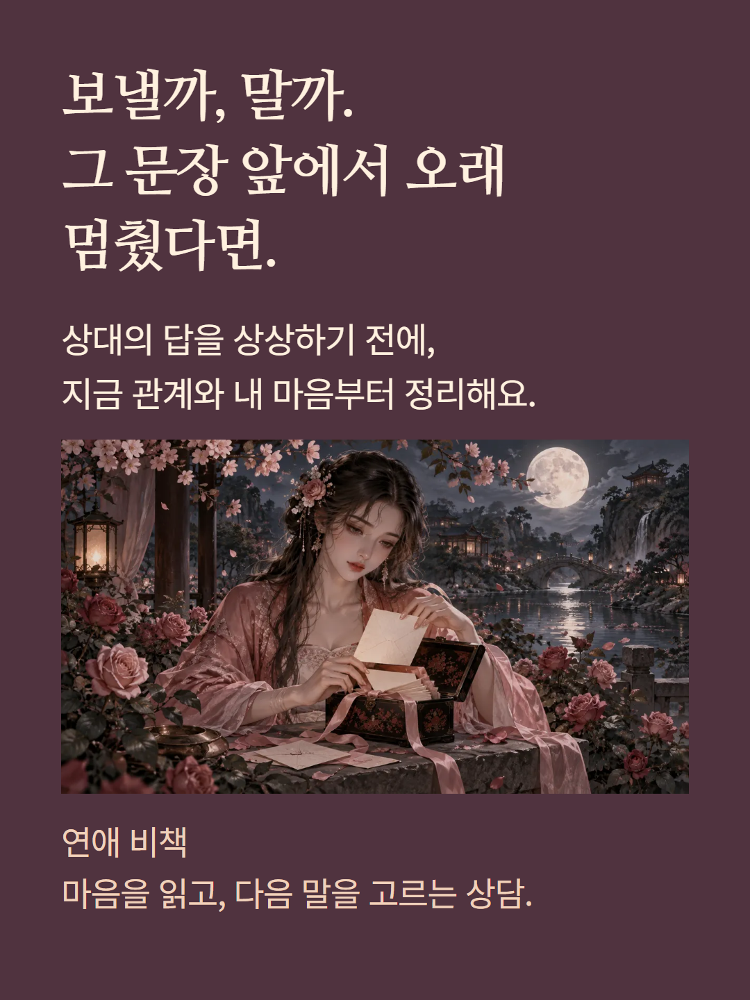
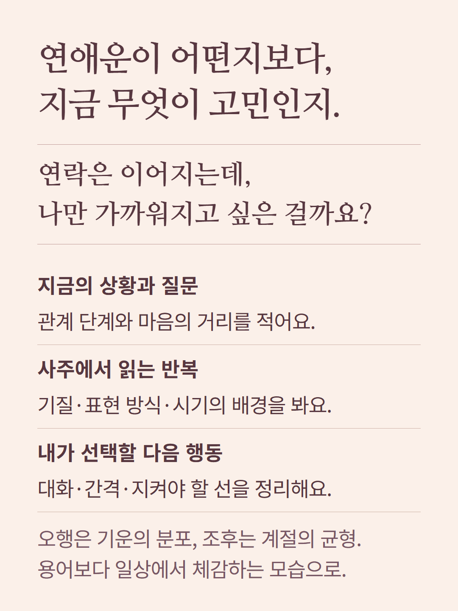
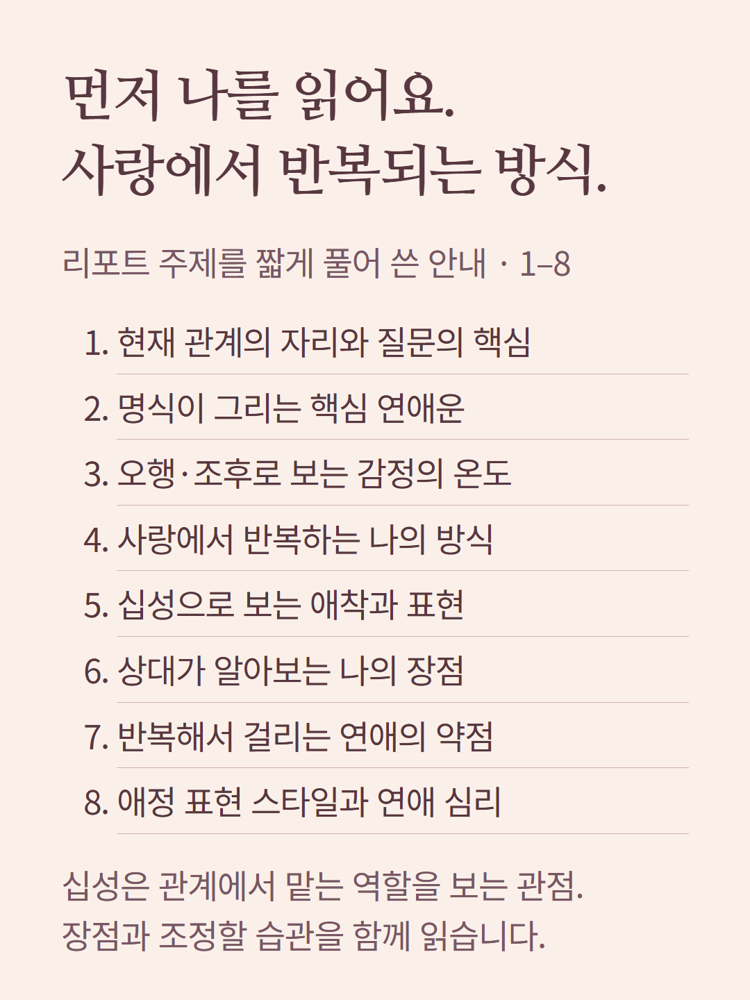
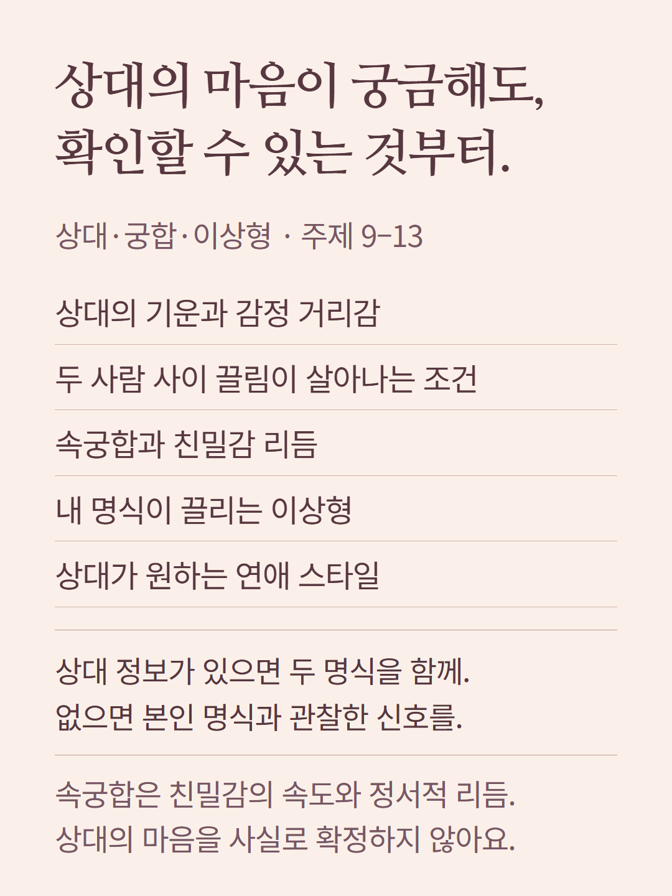
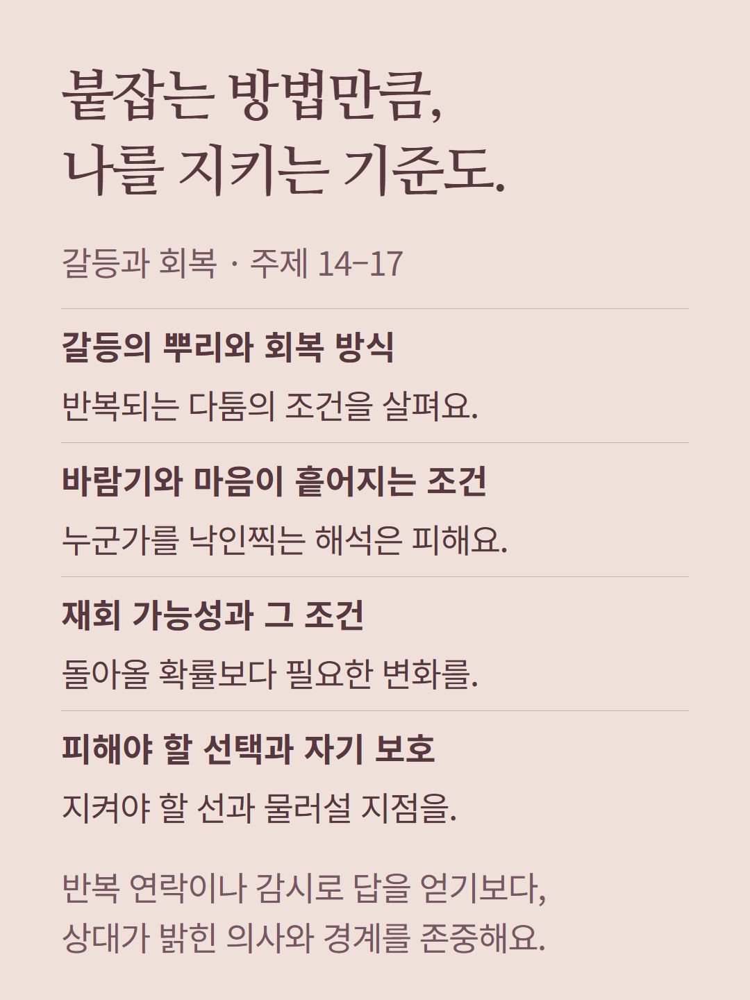
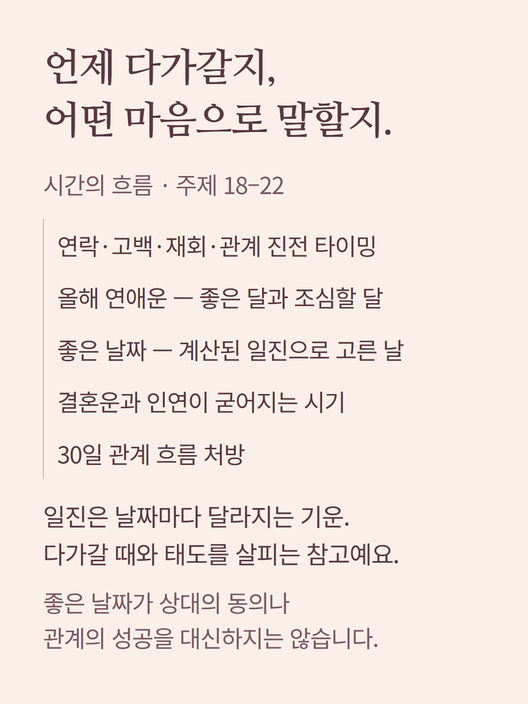
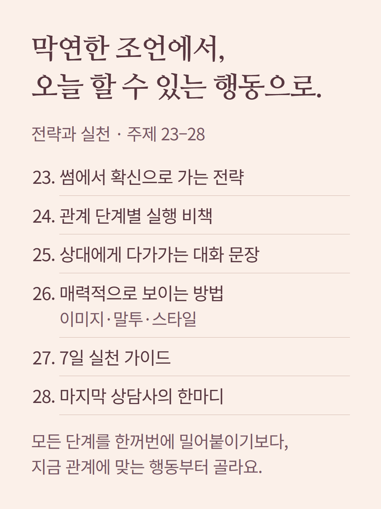
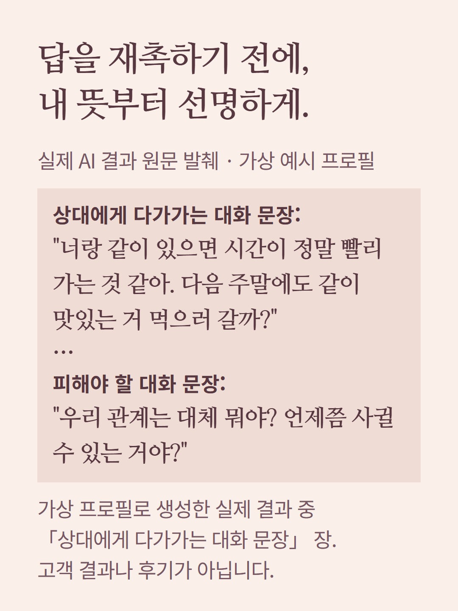
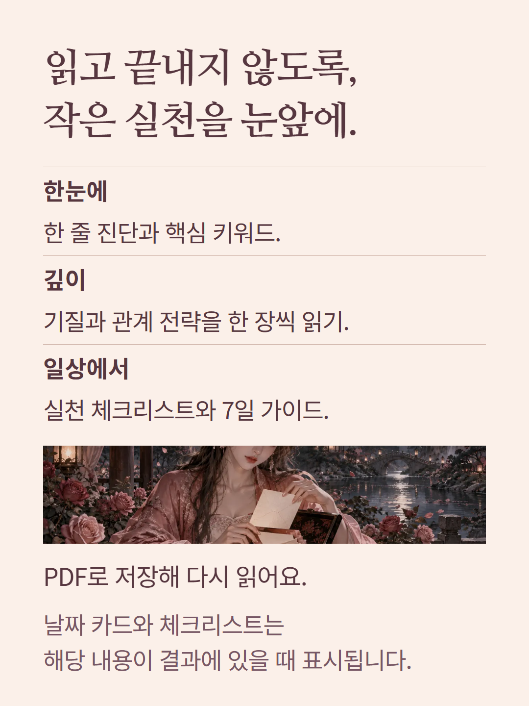
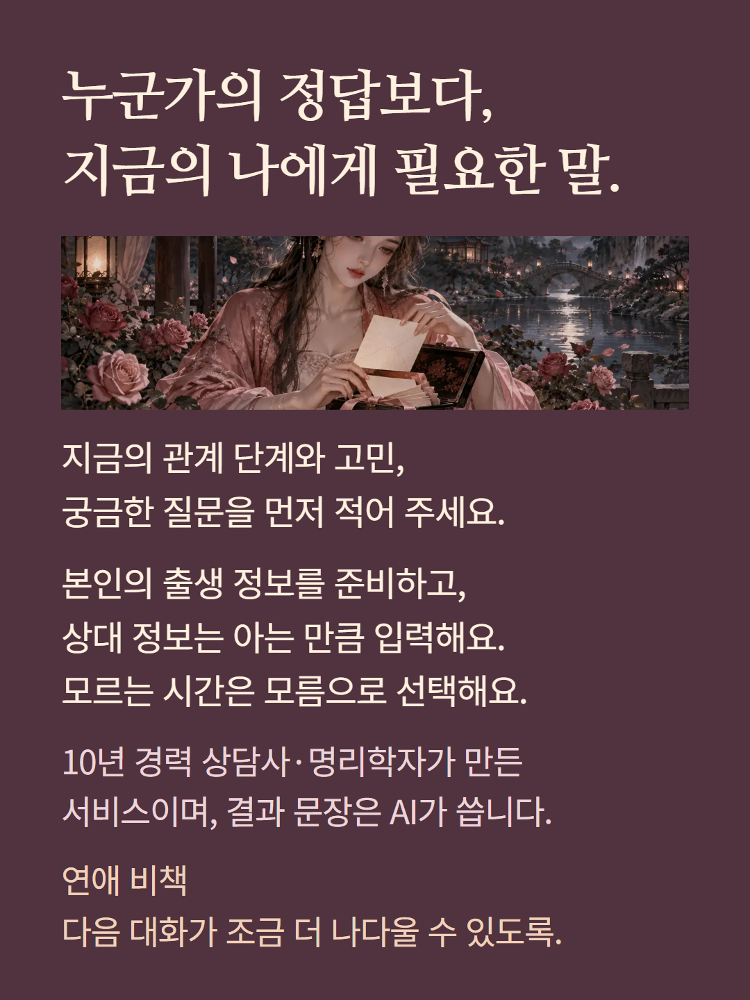

이 안내의 목차는 현재 상담이 다루는 28개 주제를 읽기 쉽게 줄여 쓴 것입니다. 실제 화면은 받은 내용을 주제별로 묶어 표시합니다. 예시 대화와 행동은 편집 예시이며 실제 고객 결과가 아닙니다. 상대 정보가 없으면 상대 명식을 계산한 궁합으로 해석하지 않습니다. 날짜 안내는 관계의 성공을 보장하지 않습니다. 10년 경력 상담사·명리학자가 만든 AI 해설 서비스이며, 사람이 결과마다 직접 집필·감수하는 상담이 아닙니다.